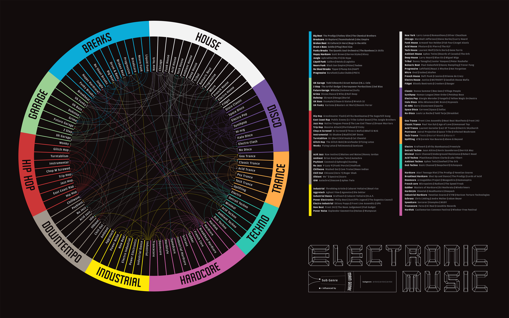

THURS-11PM ON ADULT SWIM

GET OUT OF THAT SLUMP
AND DO SOMETHING
.YOU FUCK
What is genre in the current music climate?
FEBRUARY 20, 2017 / NATHAN BEER / ARTICLE
While the looming dismay of global politics overwhelms countless nations around the world today, one positive constant remains steadfast: music. Music is the one true unifier that can neither be denied nor challenged. Yes, some people have their preferences and others dislike certain styles, artists, or songs. But artists from around the world often spend their entire lives perfecting their art, their window into their inner selves, translated through the magic of harmony and melody, lyrics and instrumentals. Some songs are cathartic while others are simply crafted for the sake of entertainment, but all have their place and purpose.
Due to music’s subjectivity and ambiguity, controversy inherently accompanies such creative work. Artists ranging from Desiigner and Nickelback to The Chainsmokers and Toby Keith are often met with as much opposition and disdain as they are love and adoration, and the belief that everything has its audience seems to ring steadily true. One of the most significant debates in music, however, is not whether a musician is deemed “good” or “bad,” but where their music falls on the spectrum of an organizational concept known as ‘genre.’
In the words that follow, we assess the history of the term ‘genre,’ its purpose and benefit, and its disputed value within the music community. Are they too limiting when categorizing artists and their music? Does any single body of work truly defy categorization? After all, the inherent chaos of our world begs for some semblance of order, and genres serve to provide listeners with an atlas to the vast and often anarchic nature of the music community.

Music genre, as most commonly defined, is “a conventional category that identifies some pieces of music as belonging to a shared tradition or set of conventions.” In other words, it serves to organize music through a reliable and relatively uniform system. There is much debate over what constitutes a genre, and whether style and form are similar or separate terms. Some experts, like musicologist Peter van der Merwe, believe that “genre should be defined as pieces of music that share a certain style or ‘basic musical language,’” while others like University of Surrey’s Allan F. Moore believe that many secondary characteristics of music like subject matter, technique, context, and theme serve to define a work’s characterization but can vary greatly within and across genres and subgenres. Michaelangelo Matos wrote a great piece for The Guardian discussing how religion, technique, technology, lyrics, rhyme schemes, and record label and artist names have influenced genre naming throughout history.
Regardless of whether you choose to define the term by technicalities or subjectivities, the world generally agrees on the purpose of genre: to offer an easily sortable and searchable library for the grand musical spectrum. Classical music is defined by time period, instrumentation, and style among other things, for example. Electronic music is often defined by its digitally-sourced instruments and the technology with which it is produced, while country music is rooted in tradition, geographical origin, and demographic. Furthermore, all three differentiate based on their distinguishable arsenal of instruments, but elements from each genre can be found in what is colloquially known as pop music. You probably won’t hear a banjo in a Mozart concerto, nor would you find Ableton robot farts in a Dolly Parton song. But, on the other hand, you might find a harpsichord, Roland drum machine, and harmonica in a single song on the pop music charts.
More specifically and arguably most complex, subgenres possess far more ambiguous criteria. In drum ’n’ bass, for example, you have subgenres like liquid, jungle, and breakbeat. Liquid is deeply rooted in melody and ambiance with influence from jazz and soul whereas jungle is frequently defined by its fast tempo, vocal sample selection, and pitch-shifted snare rolls. Breakbeat, on the other hand, is more or less the result of acid house and techno’s influence on dnb. What brings these three together are overarching themes like syncopation, Amen break sampling, tempo, and artist lineage. That is to say, drum ‘n’ bass artists usually follow in the footsteps of their predecessors with strict adherence to tradition rather than pop up unexpectedly with obscure styles like many other genres of electronic music.
Most Popular
Interview
Article
Snoop Dogg Takes A Shot At
Trump In New Video
Music
Illustration
Music
The Art of Human Fragility with Mizuki Nishiyama
Painting
Rated

Overrated

Woodstock
Bongo Drummer